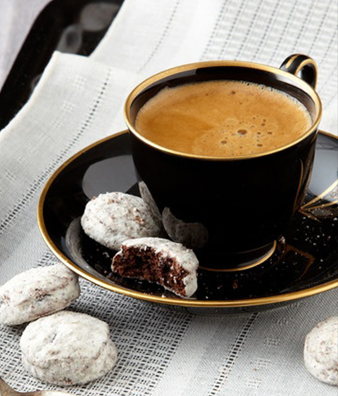

卡布奇诺
Cappuccino
当前位置>首页>产品介绍>摩卡咖啡

摩卡作为一个世界上最早的也曾经是最大的咖啡贸易的港口而闻明于世位于埃塞尔比亚海峡对面的也门，埃塞尔比亚的咖啡也曾经通过也摩卡港出口运输，摩卡港已经干枯了,但附近地区出产的咖啡还是习惯称之为摩卡。
哈拉尔(Harar咖啡,这种咖啡生长在从达罗勒布(Darolebu)平原海拔900米到埃塞俄比亚东部高地山脉谢赫谢赫(Chercher)海拔2700米范围内的地区这些山脉确实为这些常年生长的咖啡豆提供了独一无二的特征果实饱满呈长条状酸性适中,典型的摩卡爽口风味。哈拉尔(Harar)咖啡世界领先的优质咖啡;虽然品种产自国外但给人以亲切之感」口感绵润甜滑，给人以真正摩卡咖啡的丰富口感。哈拉尔咖啡几乎有最低的咖啡因含量，大约为1.13%
哈拉尔不仅是世界上最好的的日晒咖啡之一，被誉 为“旷野的咖啡”,而更像是一个美丽的传说。
埃塞俄比亚主要是是阿拉比原种;出口生豆采用干燥法和水洗法的加工方法:主要产地集中于西南部、东部及南部每年八月/一月为收获期